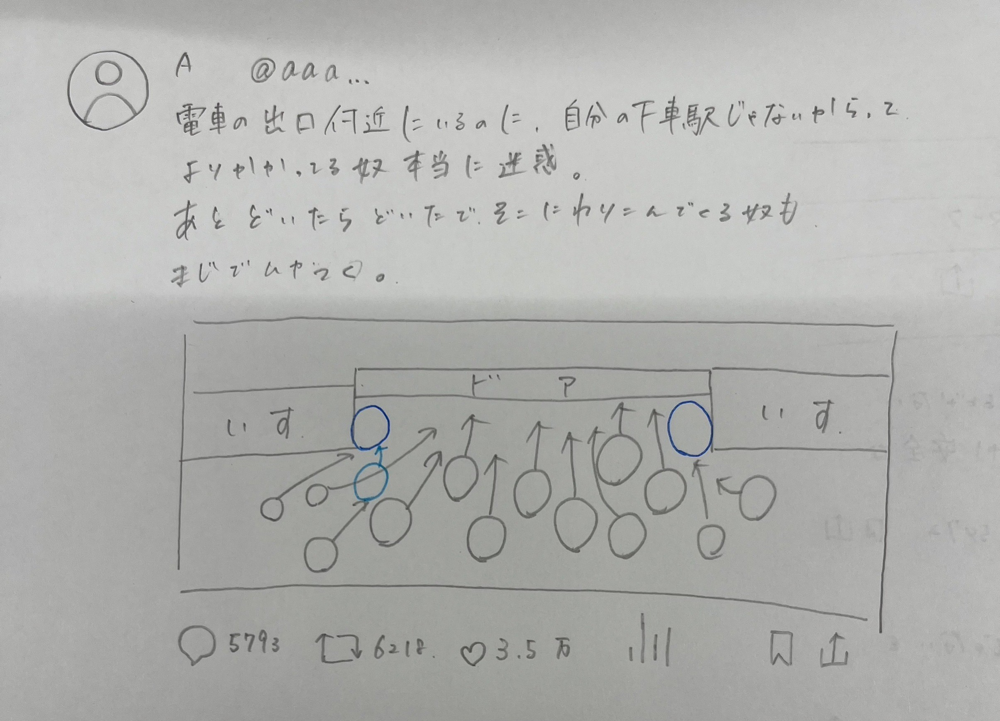
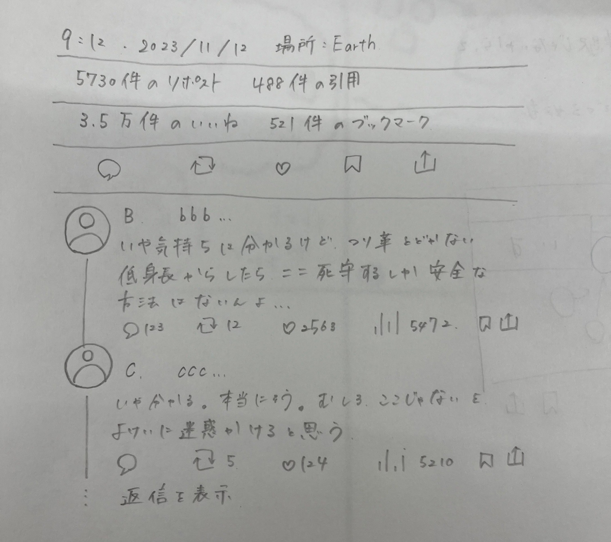
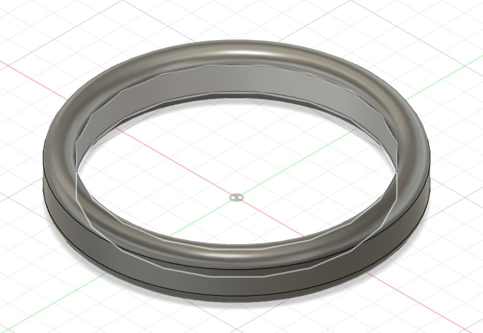

今回は誰かのためにデザインして商品のプロトタイプを制作しました
まずはこちらをご覧ください

これはX(旧Twitter)でバズっていた投稿です。
当初このポストを見たときはとても共感しました。
実際にやっている人にはイラっとくるし、自己中な人だという印象を抱きます。
しかし、リプ欄にはその考えを改めさせる"悩み"が溢れていたのです。
それがこちら↓

これを見たときにみんなが困っているこの状況を変えるために何かできないかと考えました。
そこで考えたのが
つり革のつり革です！
このつり革のつり革によって身長が届かない人も安全に電車に乗ることが出来、あのような争いが起こらないのではないのでしょうか？
つり革の持ち手

これは様々なバリエーションを作ることもできます。
つり革の筒
しかしこれがものすごく難しくて断念、、、。完成し次第再アップします。
完成品


まだ完全には完成できていないので完成し次第再アップします。